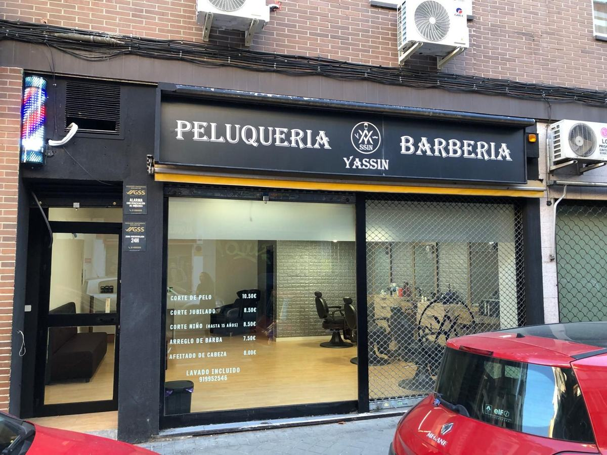
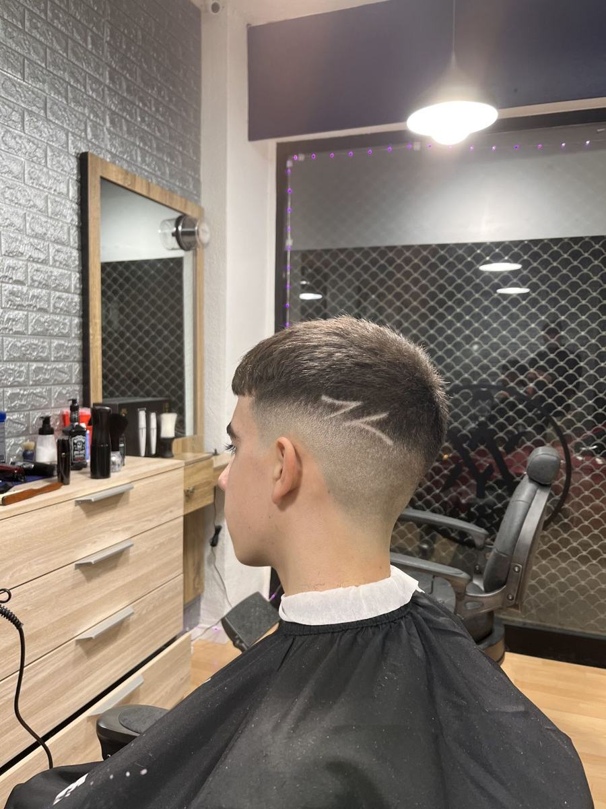
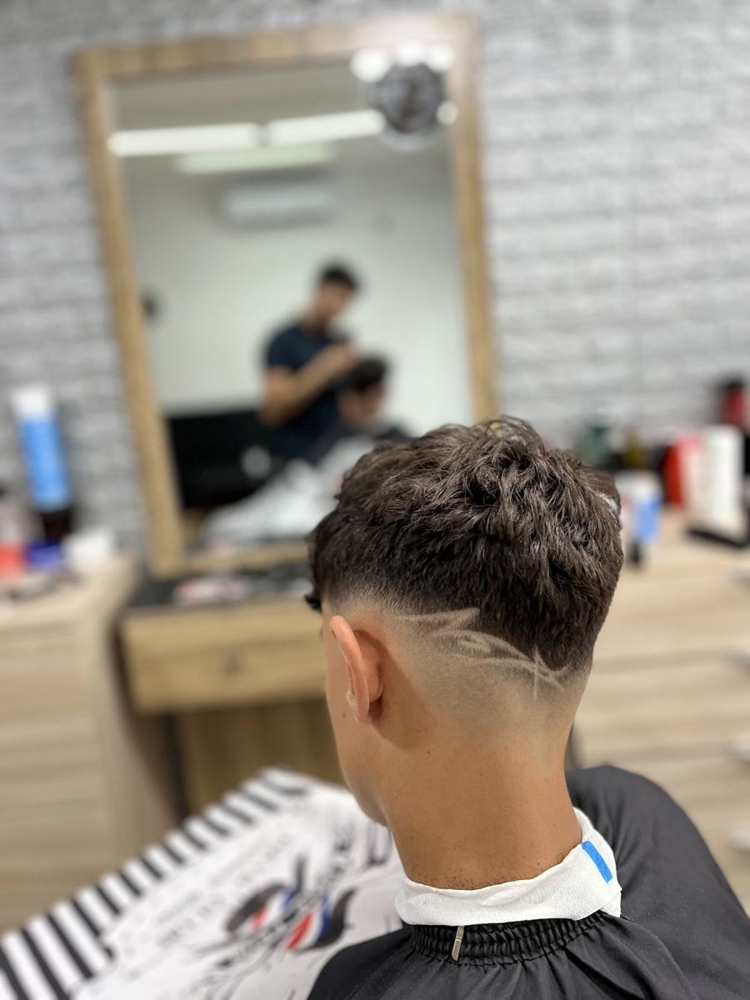
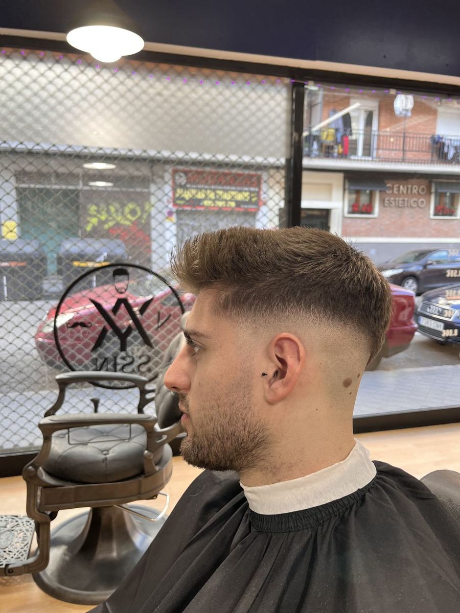
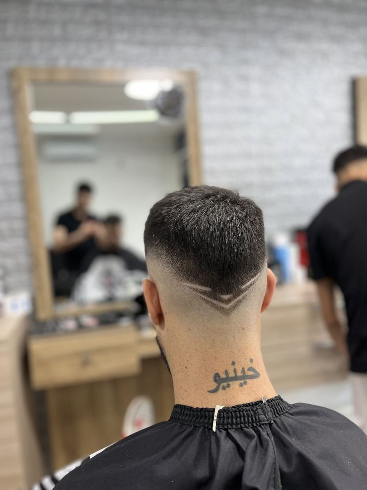
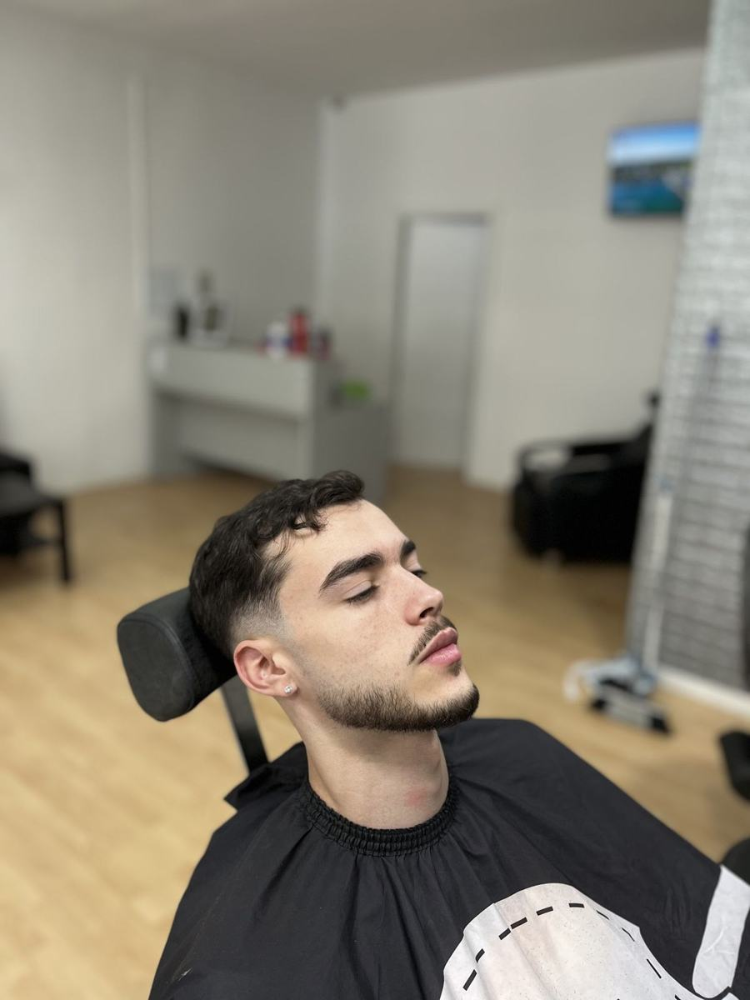
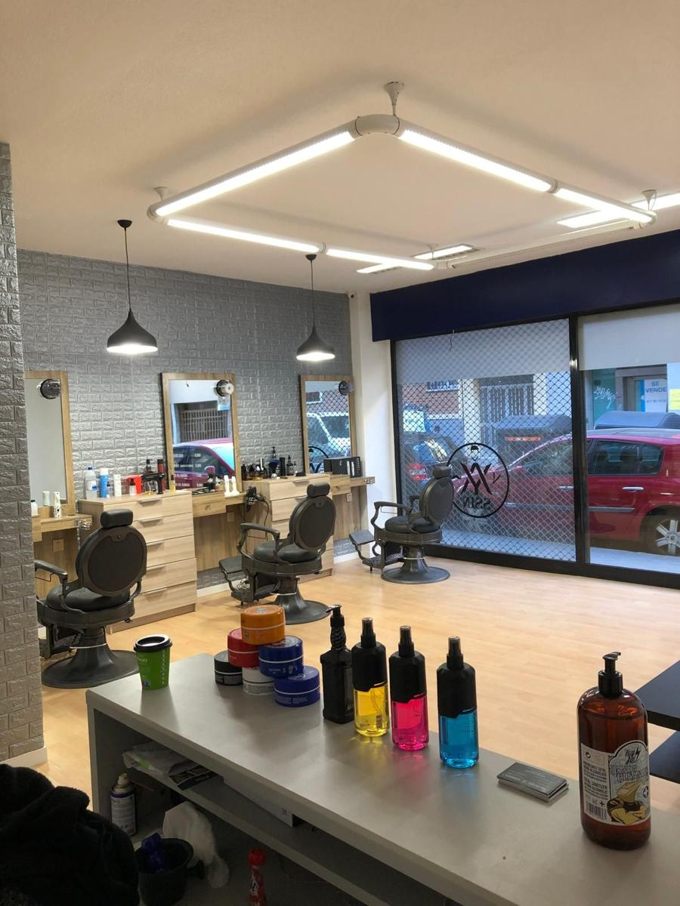

Peluquería y barbería en Carabanchel Alto. Local nuevo, buena luz y cortes con la raya perfecta.
Llamar para pedir cita5,0 · 53 reseñas en Google





Precios cerrados
| Lunes | 10:00–20:30 |
|---|---|
| Martes | 10:00–20:30 |
| Miércoles | 10:00–20:30 |
| Jueves | 10:00–20:30 |
| Viernes | 10:00–20:30 |
| Sábado | 9:30–14:30 |
| Domingo | Cerrado |